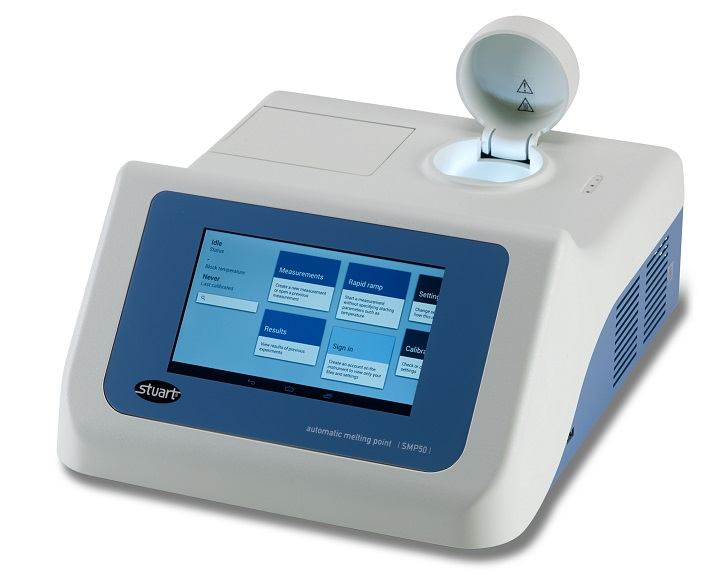

Users today expect equipment to come with a hi-resolution display and touch screen controls powered by an embedded computer. Embedded software is written using modern tools and languages allowing for rapid development and runs on top of an operating system such as Linux. An embedded computer will typically communicate with the low-level electronics using an RS232 connection.
Case Study, Cell Separator from Deparator
The DEP Cell Separator from Deparator uses an oscillating electric field to sort T cells for use in cancer treatment. Here I wrote both the firmware and embedded software. The firmware was written in C for an Atmel Atmega328p using the gcc-avr compiler. The software was written in Java using Android Studio, using the very latest Android Things OS running on a Raspberry Pi 3.
Case Study, the SMP50 from Cole Parmer

The SMP50 is an advanced laboratory apparatus that uses a camera and image processing to determining the melting point of a chemical sample. The embedded app controls the camera, processes images, records the images as video and communicates to the low-level heater electronics. The code was written in Java using Android Studio and runs on a Android embedded computer. Due to the real time image processing requirements, I had to write a C++ image driver, using the NDK to interface with the low level Video4Linux driver.

As well as writing the back end code for the camera driver, image processing, image recording and serial port comms to the heater electronics, Cole Parmer also required me to develop a production application for the SMP50 for testing, calibration and servicing
Case Study, the Jenway 7415 from Cole Parmer

This product used the same embedded computer as the SMP50 above but was required to control a much more complex set of electronics that controls a spectrophotometer. Here I was required to write a Android Service and library for handling the serial communications to the spectro electronics and also a production app for testing and calibrating the device.
For complex products a PC application is the best way to interface with your equipment or data. Desktop Windows applications allow for rich user interfaces and can process large amounts of information. Even if your product has an touch screen display, a PC application is usually necessary for setting up, servicing, testing and calibrating the device.
Case Study Diode Array PC App
Here I was required to add new features to an existing application for Cole Palmer 7200 Diode Array Spectrophotometer. The desktop application is written in C++ using Qt Creator and using the Qt framework.
Case Study Prime Calibration

Cole Parmer required PC software for their new range of life science laboratory equipment. The software needed to accurately calibrate the temperature measurement of the equipment, automate a lengthy verification procedure and produce a printable calibration certificate.
The software was written in C# using Visual Studio, the user interface was created using WPF to provide a stylish and professional look. MSI installers were created to distribute the software.
Mobile platforms now have the largest user base, reaching out to your users today will require either a website designed for mobile devices or a native app. You may need an app to compliment your product, your website or to drive your business. We have published many apps over the years, below are several case studies.
Case Studies


Weight Tracker is an Android App that lets users monitor their diets by recording their daily weigh ins. Data is stored in a local MySQL database and the user has access to reports and charts that provide trend and statistical analysis.
The app employs Google Analytics to measure anonymous usage statistics which helps us to improve the user experience. You can download the app from the Google Play Store.


Anagram Solver is an iOS App for both iPhone and iPad, it is written in Apple's new programming language Swift. You can download the app from the App Store.
Firmware is the software that runs on the electronics inside your product. The firmware performs functions such as displaying information on a LCD, handling button presses, controlling motors, measuring temperature and processing communications such as RS232 or USB. Our particular expertise is with the Microchip PIC family of microcontrollers and we can offer help with your electronic design.
Case Study

A Dri-Block is a laboratory instrument providing a wide range of temperatures. The electronics uses a Platinum Resistance Thermometer with a 20 bit ADC that delivers precise temperature measurements. The temperature is controlled using a PID controller algorithm which has been tuned to deliver a temperature stability within +/-0.1C. Temperature is displayed on 5 multiplexed 7-seg displays and 4 touch buttons are used to program the device.
The code was written in embedded C for a Microchip PIC microcontroller.